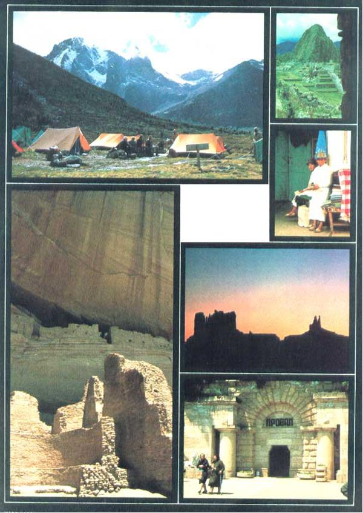

PHOTOS BY DAVID RODERICK, NATURE EXPEDITIONS INTERNATIONAL (RUSSIAN PHOTO BY SARA PACHER)
CLOCKWISE FORM UPPER LEFT: Camping at Mt. Kenya ... The ""lost city"" of Machu Picchu... A shop in Cuenca, Ecuador ... Sunset in Monument Valley ... The entrance to the Old Czarist spa of Pyatigorsk ... The Whitehouse Ruins in Canyon de Chelley, Utah.